Setup JavaFX Project in Eclipse
Langkah 1. Siapkan sebuah java project dengam versi java 11 dan pastikan module-info.java dibuat.
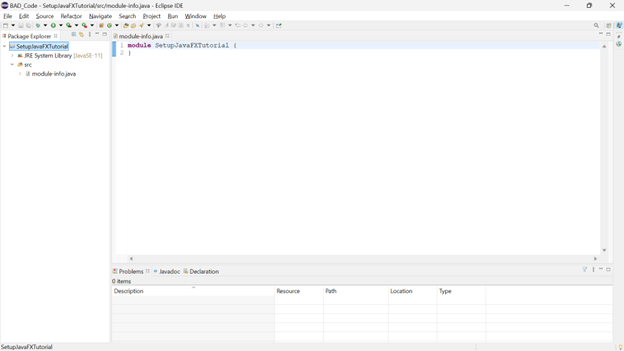{kind=link}
Java Project dengan module-info.java dan versi Java 11
Langkah 2. Membuat class Main dalam package main.
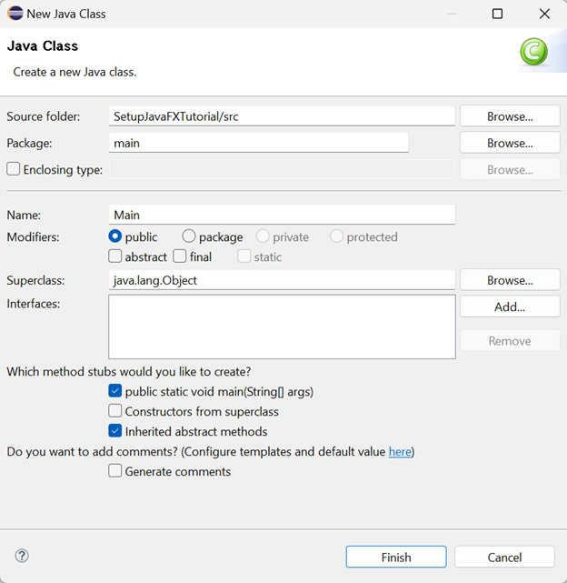{kind=link}
Membuat class Main dalam package main.
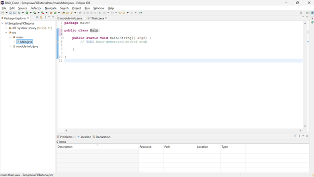{kind=link}
Hasil class Main dalam package main.
Langkah 3. Menambahkan JavaFX SDK ke dalam project. Klik kanan project, pilih build path, dan pilih configure build path.
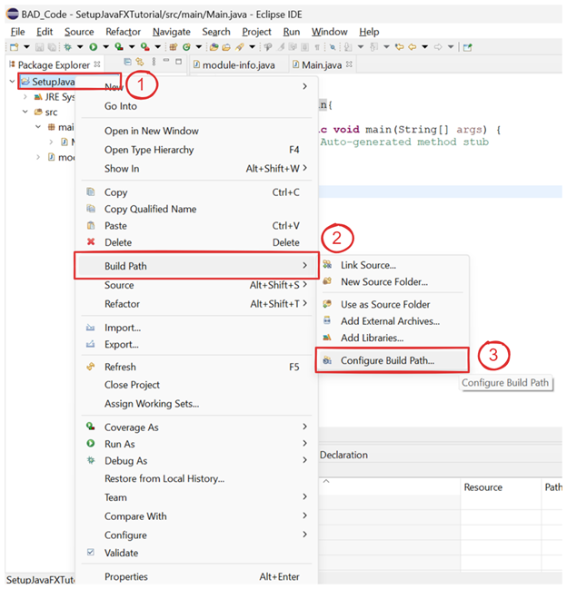{kind=link}
Akses konfigurasi build path
Langkah 4. Pada tab Library dan bagian Modulepath, klik Add Library
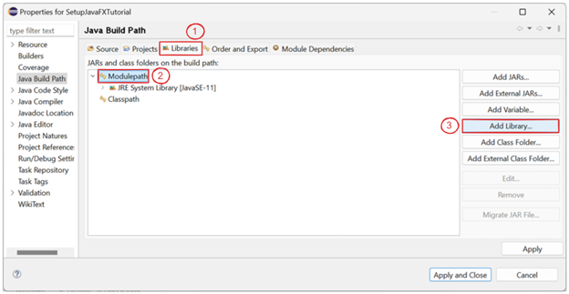{kind=link}
Tampilan konfigurasi build path
Langkah 5. Pilih User Library, pastikan di user library sudah disiapkan library JavaFX.
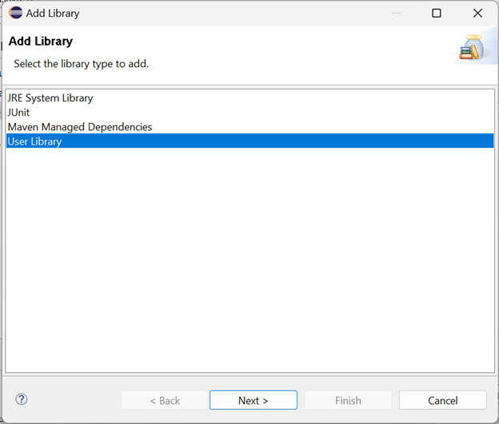{kind=link}
Tampilan add library
Langkah 6. Ceklis library JavaFX yang sudah disiapkan, lalu klik finish.
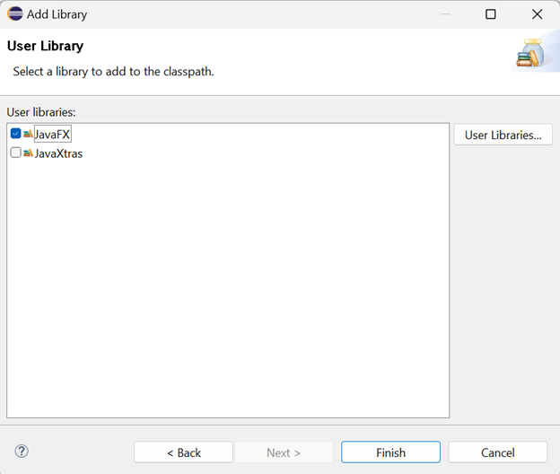{kind=link}
Add JavaFX from User Library
Langkah 7. Setelah berhasil ditambahkan, klik apply and close.
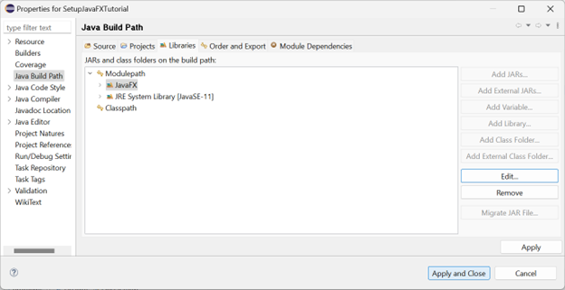{kind=link}
Menyelesaikan konfigurasi add JavaFX.
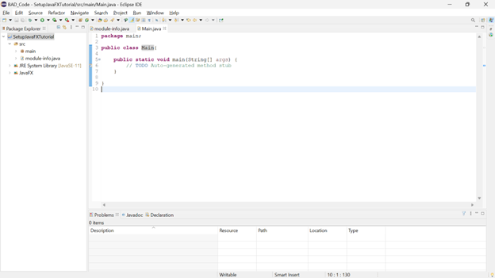{kind=link}
Hasil konfigurasi add JavaFX.
Langkah 8. Setelah menambahkan library JavaFX, setup class Main dengan extends Application dan import Application dari library JavaFX.
{kind=link}
Extends Application
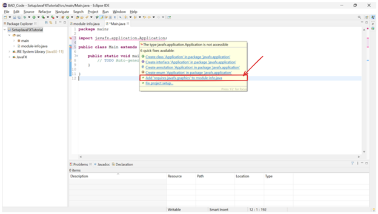{kind=link}
Hasil Extends Application
Langkah 9. Hover error yang terjadi dan solve dengan klik Add 'requires javafx.graphics' to module-info.java.
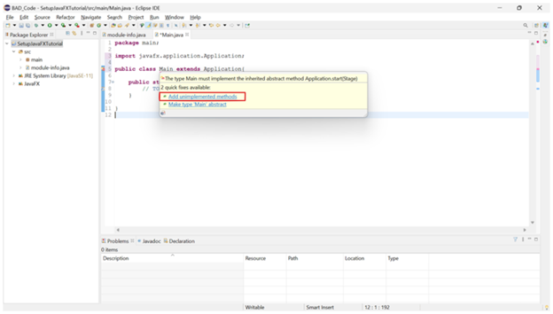{kind=link}
Add 'requires javafx.graphics
Langkah 9. Hover error yang terjadi dan solve dengan klik Add unimplemented methods.
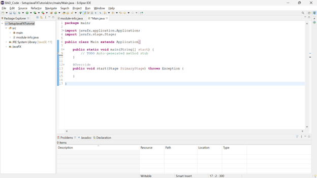{kind=link}
Add unimplemented methods
Langkah 10. Buat komponen dasar halaman JavaFX pada class Main.
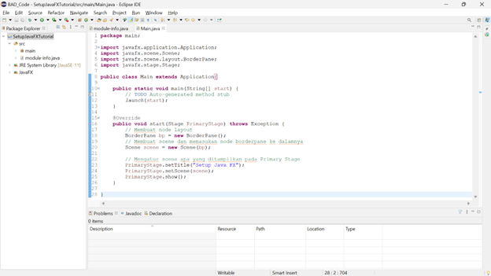{kind=link}
Komponen dasar halaman JavaFX.
Langkah 11. Pastikan module-info.java sudah lengkap dan membuka semua package yang ingin dijalankan.
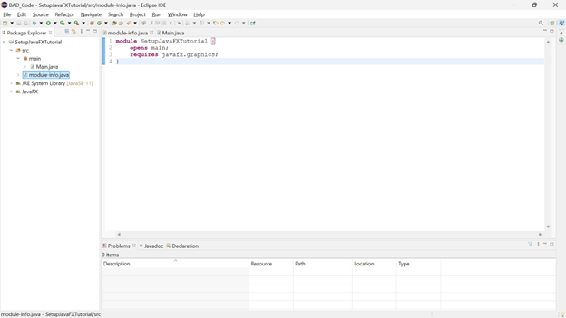{kind=link}
module-info.java
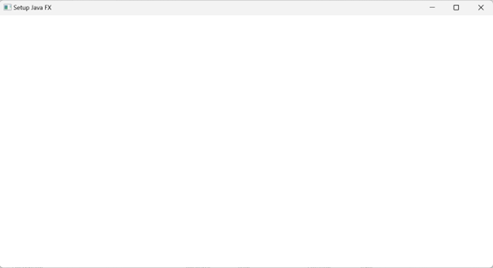{kind=link}
Hasil halaman JavaFX setelah dijalankan.